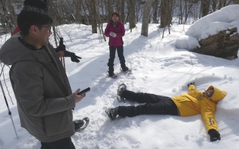

奥入瀬渓流エコツーリズム推進全体構想について
『エコツーリズム』とは
自然環境や歴史文化を対象とし、それらを体験し、学ぶとともに、対象となる地域の自然環境や 歴史文化の保全に責任を持つ観光のありかたのことをいいます。
全文ははこちらから（PDFを開く）
推進地域
天然の自然博物館を、ガイドと一緒にもっと体験しませんか。ガイドツアーやアクティビティ等、詳しくはパンフレットをご覧ください。
対象地域図を見る（PDFを開く）
全体構想の概要
奥入瀬渓流エコツーリズム推進全体構想で推進するエコツーリズムの基本方針は以下のとおりです。
|
1．自然環境の保全 ～天然の自然博物館「奥入瀬」を将来にわたって保全するためのエコツーリズム～ |
|
2．観光・地域の振興 ～奥入瀬ならではの自然を活用した観光・地域振興。人と人との出会いを生み出すエコツーリズム～ |
|
3．人と自然のふれあいの推進 ～「人と自然の新しい関係」を創り出すエコツーリズム～ |
これらの方針を踏まえて、自然環境、利用環境、エコツアーの質に関する各種ルールを設定し、「天然の自然博物館」として地域の自然を保全しつつ活用していきます。
また、自然環境や利用環境の現状把握と保全のため、地元ガイドをはじめとする関係者や関係機関により自然環境のモニタリングも継続して行っていきます。
奥入瀬渓流の散策を楽しむための利用ルール
状に影響を与えない利用をしましょう
※奥入瀬渓流は、国立公園の特別保護地区かつ特別名勝・天然記念物、国有林の自然維持タイプであり、厳正な保護がなされています。奥入瀬渓流の素晴らしい自然環境を次世代に残していくために、ご理解・ご協力をお願いします。

現在行われているツアー
自然を体験するプログラムとして、当地域では、地元ガイドと渓流沿いの歩道や多数ある滝を巡るツアー、奥入瀬ならではの自然環境が育んだコケなどをじっくり観察するツアー、他にはない特徴的な地形や地質を楽しむツアー、豊かな自然の癒しを体感するツアー、冬季のスノーシューツアーや氷瀑観察などが行われています。
ツアーパンフレットはこちらから（PDFを開く）
-
ネイチャーガイドと歩く渓流ガイドツアー
-
奥入瀬渓流コケさんぽ
-

コケ玉づくり体験
-
グリスロで楽しむ奥入瀬渓流ネイチャーツアー
-

スノーシューツアー
-
奥入瀬渓流氷瀑ツアー